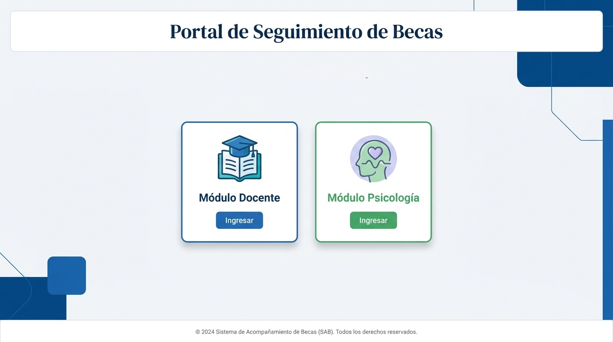
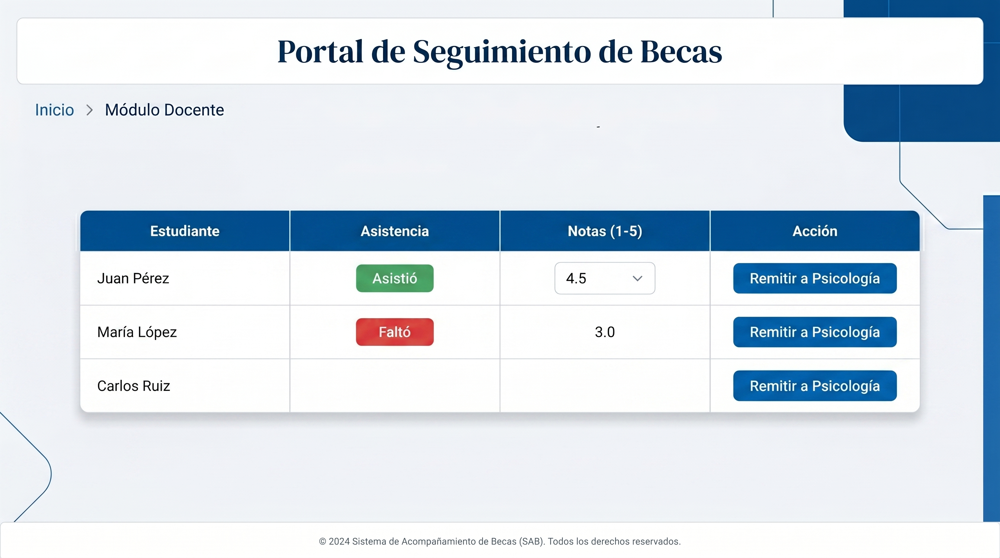
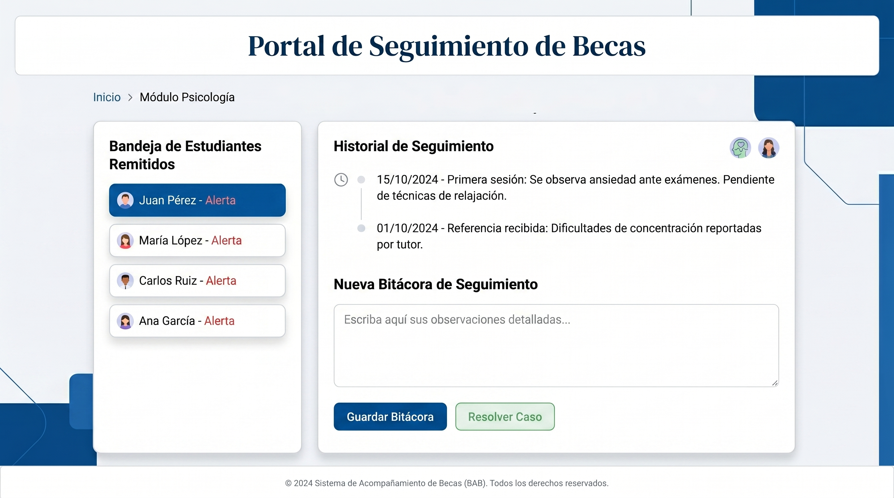

Portal de Seguimiento de Becas
Sistema de Acompañamiento Académico (SAB)
Instituto Técnico José Mutis
Asignatura: Lógica de Programación
2024
Sistema de Acompañamiento Académico (SAB)
Instituto Técnico José Mutis
Asignatura: Lógica de Programación
¿Qué problema resuelve este sistema?
Aplicación web tipo SPA (Single Page Application)
Una sola página HTML que cambia de contenido sin recargar, proporcionando una experiencia fluida.
Almacenamiento local del navegador que persiste los datos sin necesidad de servidor.
Docente para gestión académica y Psicología para acompañamiento estudiantil.
| ID | Descripción |
|---|---|
view-home | Página principal con selección de rol |
view-docente | Dashboard del docente |
view-psicologia | Dashboard de psicología |
| ID | Función |
|---|---|
loginModal | Formulario de inicio de sesión |
studentModal | Crear/editar estudiante |
viewStudentModal | Detalle del estudiante |
activityModal | Agregar actividad |
| Programa | Módulos |
|---|---|
| Sistemas e Informática | 4 módulos |
| Auxiliar Contable | 6 módulos |
| Categoría | Peso |
|---|---|
| Desempeño | 40% |
| Conocimiento | 20% |
| Producto | 40% |
Aprobación: Nota ≥ 3.8
Alerta: Cualquier actividad < 3.5
Remisión: Se activa botón "Remitir a Psicología"
Proceso de comunicación entre Docente y Psicología
El estudiante pasa a seguimiento activo. Se registran observaciones, planes de acción y fechas de próximo seguimiento.
Se ingresa la razón del rechazo. El estudiante sale del sistema de alertas. Se registra en bitácora.
Becados Totales
Activos
Alertas
Promedio
Historial de estudiantes aceptados con estado (En Seguimiento / Resuelto), fecha de aceptación y número de seguimientos.
Lista de remitidos por docentes. Opciones: Aceptar caso o Rechazar con justificación.
Formulario de seguimiento con: tipo, módulo, fechas, descripción y plan de acción.
| Tipo | Descripción |
|---|---|
| Seguimiento | Monitoreo continuo del estudiante |
| Evaluación | Análisis del rendimiento académico |
| Orientación | Guía y consejería académica |
| Intervención | Acción directa ante problemáticas |
| Otra | Actividades diversas de acompañamiento |
Cuando un caso se resuelve, el estudiante pasa al historial como "Resuelto" y sale de la lista activa.
Estructura semántica de la aplicación con vistas, modales y formularios.
Diseño responsive con Grid, Flexbox, gradientes y animaciones.
Lógica de programación vanilla con manejo de DOM y eventos.
Almacenamiento local persistente para datos de becados.
Librería de iconos vectoriales para la interfaz de usuario.
Fuente Inter para una tipografía moderna y legible.
Todo ejecuta en el navegador, sin necesidad de servidor ni instalación
Interfaz principal de la aplicación

Pantalla de Login

Dashboard Docente

Dashboard Psicología
¡Gracias por su atención!
Portal de Seguimiento de Becas (SAB) — Instituto Técnico José Mutis